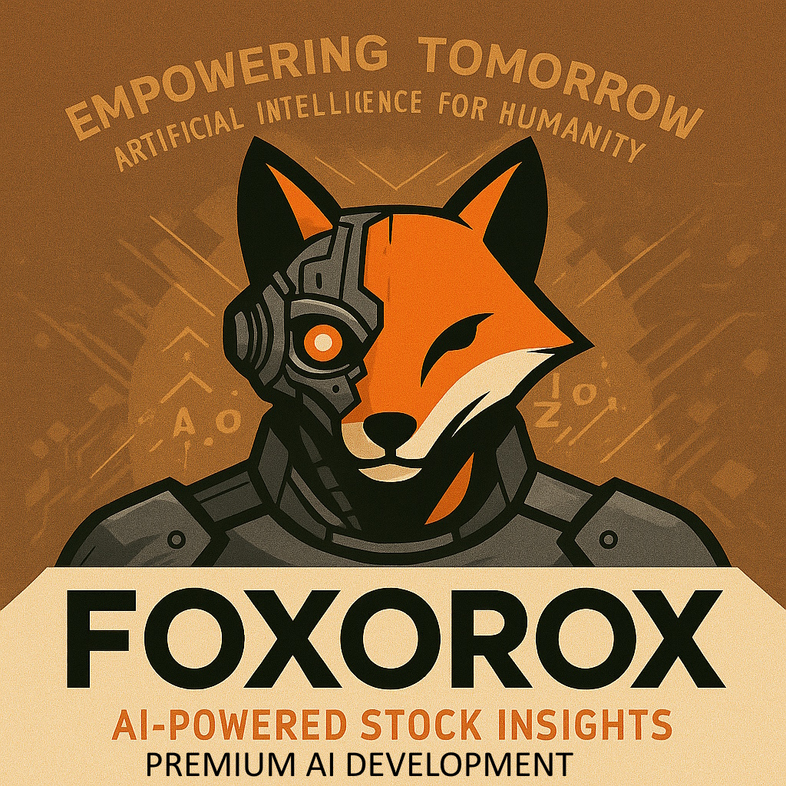

Foxorox AI Market Forecast – 2025-10-31
Automatically generated summary from today's AI analysis.
Top 2 Stocks
- Hologic – Gap: 13.69%, Candle: black (67.78%)
- Hologic Stock runs like crazy up so possible correction but not for long time. It could be temporary only

- Microsoft – Gap: 36.19%, Candle: black (62.47%)
- Microsoft – Stock continuing its trad down. I dont think so that it would soon rebound esspecialy that some bad news are coming from company. Recently, Microsoft has faced several challenges that have shaken investor confidence. A major outage hit Azure, Microsoft 365, and even Xbox and Minecraft services, disrupting millions of users worldwide and raising concerns about cloud reliability ( is it cloud anymore or something else). Massive spending on artificial intelligence might be overhyped and slow to generate returns, company spent to much and ther is no return on such spenidng. Local opposition and environmental regulations are also delaying the expansion of Microsoft’s data centers, increasing infrastructure costs. Overall, while Microsoft remains a leader in technology, these recent issues highlight growing operational and strategic risks behind its ambitious AI push.